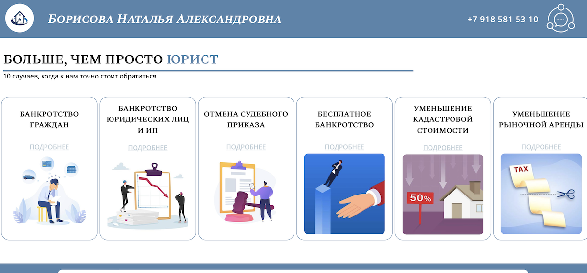
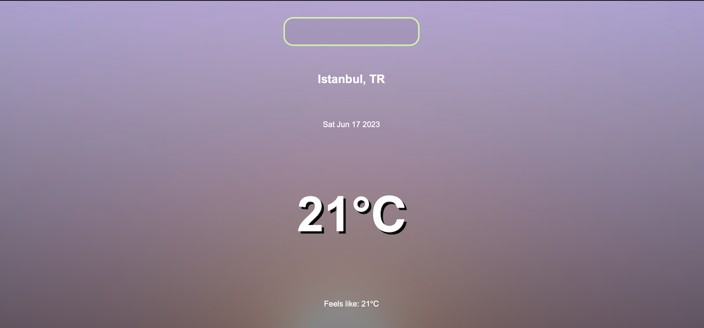
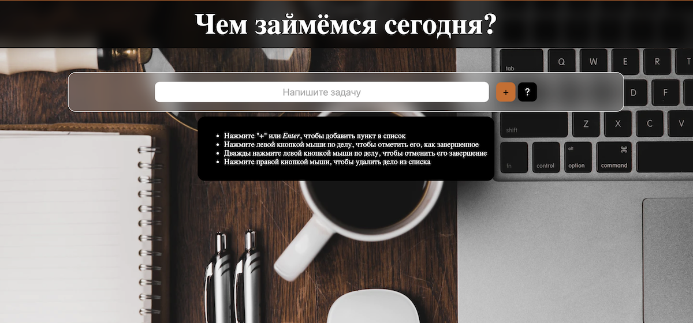
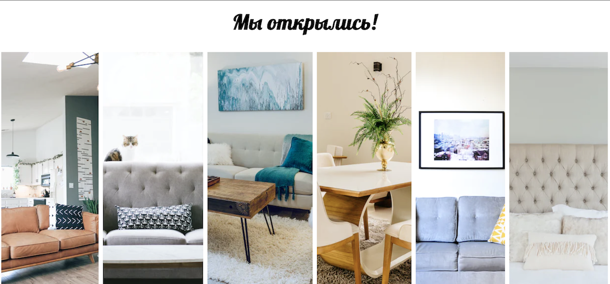

Мои сайты
и функциональные демо
İstanbul Experience
Сайт-проект для гида в Стамбуле. Отображает полезную информацию о Стамбуле, интересных местах и услугах, предоставляемых услугах гида и его партнеров.
Использованы: HTML, CSS, JS

Юрист Наталья Борисова
Сайт-проект для Натальи Борисовой (@borisova_jurist). Отображает инфомацию об оказываемых услугах и дополнительную юридическую информацию.
Использованы: HTML, CSS
CooKit – сайт со списком покупок
Демо-версия сайта с возможностью поиска блюда по названию или ингредиенту. Нажмите на список ингредиентов, и он добавится в ваш список покупок в углу экрана.
Использованы: HTML, CSS, JS

Погода
Демо-версия сайта с поиском погоды в любом городе мира. Главное – написать его название по-английски.
Использованы: HTML, CSS, JS, OpenWeather API
Рождество
Сайт с таймером до 25-го Декабря текущего года под прекрасное музыкальное сопровождение Мэрайи Кэри
Использованы: HTML, CSS, JS

Сайт-список дел
Демо-версия сайта-списка дел, где можно добавлять дела, отмечать их, как завершенные, и удалять. Когда на экране нет дел, автоматически показывается руководство приложения.
Использованы: HTML, CSS, JS
Галерея мебели
Демо-версия галереи из фото. Наведите курсор, чтобы увидеть развернутое изображение с дополнительной информацией
Использованы: HTML, CSS
